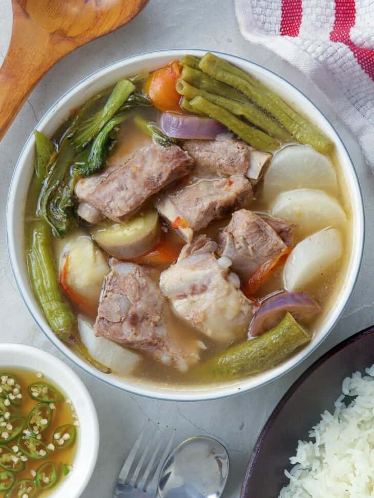

ADOBO
Adobo, a beloved Filipino dish, features meat (typically chicken or pork) marinated in vinegar, soy sauce,
garlic, and spices, then simmered until tender. Its name originates from the Spanish word "adobar,"
meaning to marinate or season. With roots tracing back to pre-colonial times, indigenous peoples preserved meat
in vinegar and salt for longevity in the tropical climate. Influenced by Spanish colonization in the 16th century,
vinegar became a staple in Filipino cuisine, merging with local techniques to create adobo. This dish
has evolved with regional variations, captivating palates globally for its simplicity, adaptability, and rich flavor.
Ingredients
-
8 Chicken Thighs
-
20 Garlic cloves, heavily crushed
-
Crack of black pepper
-
1 1/4 cup (300ml) unseasoned rice vinegar
-
1/2 cup (120ml) soy sauce (silver swan)
-
1/4 cup (60ml) dark soy sauce
-
1 tablespoon (7g) black peppercorns
-
3 tablespoons palm sugar (50g) (depending on if the soy sauce you have has sweetness to it)
-
4 bay leaves
-
1/2 cup (120ml) water
-
Green onions for topping
-
Rice for serving
Instructions
-
In a large bowl, add in all the chicken (thighs and drumsticks) and the heavily crushed cloves of garlic.
-
To that add a fresh crack of black pepper, black peppercorns, palm sugar, unseasoned rice vinegar, dark soy sauce, regular soy sauce, filtered water, and toss together and add in bay leaves.
-
Cover with plastic wrap and marinate in the fridge for 2 hours, or ideally overnight. **Reserve all marinated liquid**
-
Set a large braiser or dutch oven over medium-high heat and coat with oil to cover the pan.
-
Sear all the chicken in batches on all sides for 2-3 minutes per side. Place each batch to the side once done browning to avoid overcrowding.
-
Add marination to the pan (without the chicken) along with all the aromatics. Increase the heat to medium-high and add the chicken pieces to the pan in layers and bring to a boil.
-
Once it reaches a boil, reduce the heat to low and let simmer (covered) for 35 minutes. Uncover and flip the chicken pieces, cover them again, and cook for another 25-35 more minutes. Turn chicken over occasionally to thoroughly coat and the sauce thickens and a glaze.
-
Place the chicken on a plate of rice topped with green onions. Spoon on as much sauce as desired.
Step-by-step Adobo tutorial (Joshua Weissman):
https://www.youtube.com/watch?v=2KsYYmSGKOc
SINIGANG
Sinigang is a sour soup from the Philippines, traditionally made with pork, beef, shrimp, or fish and
flavored with tamarind or other souring agents. Its roots trace back to indigenous Filipino cooking methods, evolving
over time with Spanish influence. This beloved dish is cherished for its tangy taste and versatility, representing the
rich culinary heritage of the Philippines.
Ingredients
-
2 lbs pork belly or buto-buto
-
1 bunch spinach
-
3 tablespoons fish sauce
-
12 pieces string beans sitaw, cut in 2 inch length
-
2 pieces tomato quartered
-
3 pieces chili
-
1 tablespoons cooking oil
-
2 quarts water
-
1 piece onion sliced
-
2 pieces taro gabi, quartered
-
1 pack sinigang mix
Instructions
-
Heat the pot and put-in the cooking oil
-
Sauté the onion until its layers separate from each other
-
Add the pork belly and cook until outer part turns light brown
-
Put-in the fish sauce and mix with the ingredients
-
Pour the water and bring to a boil
-
Add the taro and tomatoes then simmer for 40 minutes or until pork is tender
-
Put-in the sinigang mix and chili
-
Add the string beans (and other vegetables if there are any) and simmer for 5 to 8 minutes
-
Put-in the spinach, turn off the heat, and cover the pot. Let the spinach cook using the remaining heat in the pot.
-
Serve hot. Share and enjoy!
Step-by-step Sinigang tutorial (Ninong Ry):
https://www.youtube.com/watch?v=yixUmVW37oA

KARE-KARE
Kare-kare is a Filipino stew recognized for its rich and savory peanut sauce, typically served with oxtail, tripe,
and a variety of vegetables like eggplant and string beans. This dish traces its origins to pre-colonial Philippines,
where indigenous communities utilized ground peanuts in their cooking. With the arrival of Spanish colonizers, Kare-kare
evolved, incorporating additional ingredients and flavors. Today, it stands as a beloved Filipino dish, celebrated for
its unique taste and cultural significance, often served during special occasions and gatherings.
Ingredients
-
3 lbs oxtail cut in 2 inch slices you an also use tripe or beef slice
-
1 piece small banana flower bud sliced
-
1 bundle pechay or bok choy
-
1 bundle string beans cut into 2 inch slices
-
4 pieces eggplants sliced
-
1 cup ground peanuts
-
1/2 cup peanut butter
-
1/2 cup shrimp paste
-
34 Ounces water about 1 Liter
-
1/2 cup annatto seeds soaked in a cup of water
-
1/2 cup toasted ground rice
-
1 tbsp garlic minced
-
1 piece onion chopped
-
salt and pepper
-
In a large pot, bring the water to a boil
-
Put in the oxtail followed by the onions and simmer for 2.5 to 3 hrs or until tender (35 minutes if using a pressure cooker)
-
Once the meat is tender, add the ground peanuts, peanut butter, and coloring (water from the annatto seed mixture) and simmer for 5 to 7 minutes
-
Add the toasted ground rice and simmer for 5 minutes
-
On a separate pan, saute the garlic then add the banana flower, eggplant, and string beans and cook for 5 minutes
-
Transfer the cooked vegetables to the large pot (where the rest of the ingredients are)
-
Add salt and pepper to taste
-
Serve hot with shrimp paste. Enjoy!
Step-by-step Kare-kare tutorial (Panlasang Pinoy):
https://www.youtube.com/watch?v=ll0lufTkGq4